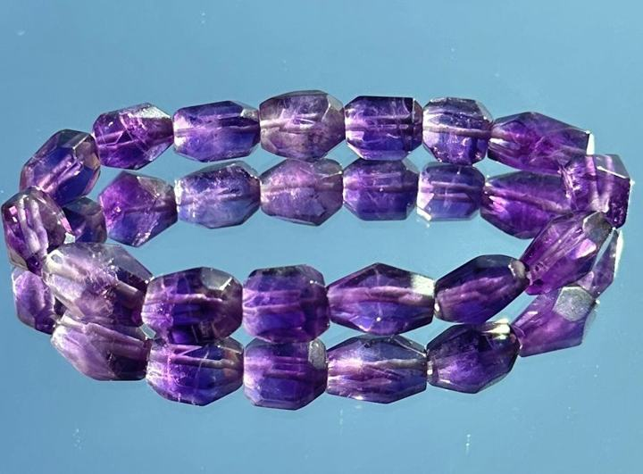

產地與礦物結構
產地背景
巴西、尚比亞等地有出產紀錄，產地本身不能代表每件的顏色或品質。
礦物結構與名稱
紫色的石英品種，以二氧化矽為主。切面是加工造型，與天然晶體的晶系是不同概念。
本頁產地是礦種資料中的產出紀錄，不代表照片中商品已完成產地鑑定；原料產地、加工地與販售地是不同資訊。
故事、寓意與日常陪伴
在民間寓意中，紫水晶常與沉靜、思考和智慧相連；可把這份象徵當作留一點時間給自己的提醒。
以上為文化寓意或配戴心情，不代表實際功效。
適合怎麼搭配？
奶白、灰色、黑色與柔和紫粉都適合，讓切面的光澤成為重點。
日常保養
避免長時間強光曝曬與高溫；不以超音波清洗含裂隙的珠串。
看完整保養指南 →官網上的 紫水晶 款式
沿用商品原名稱與照片；售價、庫存及服務依賣場最新資訊確認。
礦石寓意與能量相關內容整理自網路資料，僅供介紹參考，並非科學功效或效果保證。